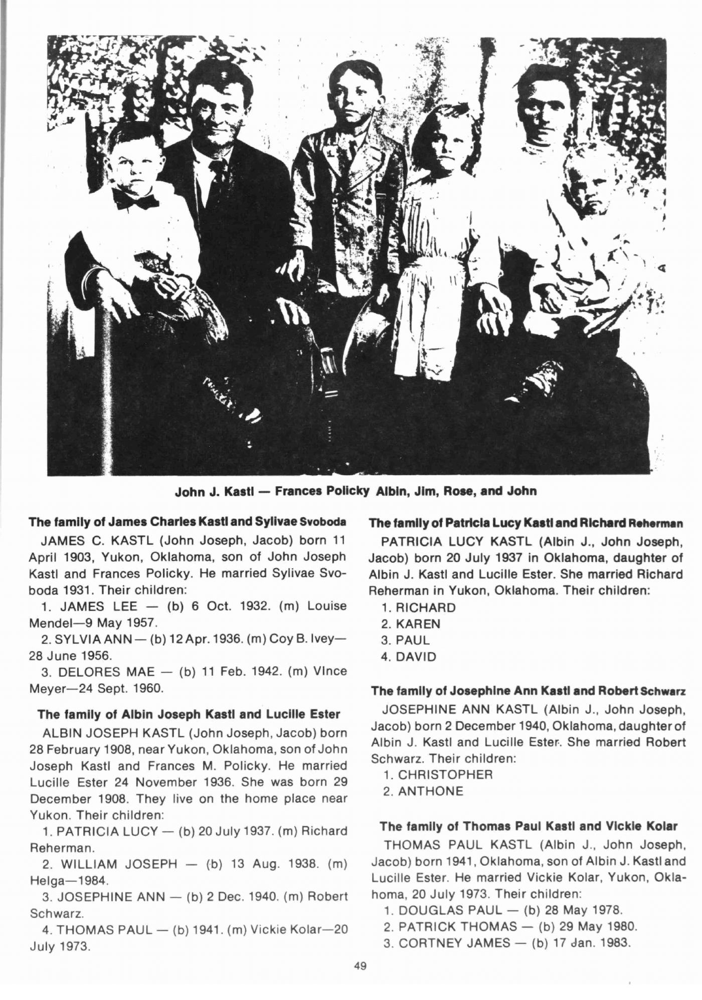

The book · The Family of Jacob Kastl
Page 49 The family of James Charles Kastl and Sylivae Svoboda


Transcription

The family of James Charles Kastl and Sylivae Svoboda
JAMES C. KASTL (John Joseph, Jacob) born 11 April 1903, Yukon, Oklahoma, son of John Joseph Kastl and Frances Policky. He married Sylivae Svoboda 1931. Their children:
- JAMES LEE — (b) 6 Oct. 1932. (m) Louise Mendel—9 May 1957.
- SYLVIA ANN — (b) 12 Apr. 1936. (m) Coy B. Ivey—28 June 1956.
- DELORES MAE — (b) 11 Feb. 1942. (m) VInce [sic] Meyer—24 Sept. 1960.
The family of Albin Joseph Kastl and Lucille Ester
ALBIN JOSEPH KASTL (John Joseph, Jacob) born 28 February 1908, near Yukon, Oklahoma, son of John Joseph Kastl and Frances M. Policky. He married Lucille Ester 24 November 1936. She was born 29 December 1908. They live on the home place near Yukon. Their children:
- PATRICIA LUCY — (b) 20 July 1937. (m) Richard Reherman.
- WILLIAM JOSEPH — (b) 13 Aug. 1938. (m) Helga—1984.
- JOSEPHINE ANN — (b) 2 Dec. 1940. (m) Robert Schwarz.
- THOMAS PAUL — (b) 1941. (m) Vickie Kolar—20 July 1973.
The family of Patricia Lucy Kastl and Richard Reherman
PATRICIA LUCY KASTL (Albin J., John Joseph, Jacob) born 20 July 1937 in Oklahoma, daughter of Albin J. Kastl and Lucille Ester. She married Richard Reherman in Yukon, Oklahoma. Their children:
- RICHARD
- KAREN
- PAUL
- DAVID
The family of Josephine Ann Kastl and Robert Schwarz
JOSEPHINE ANN KASTL (Albin J., John Joseph, Jacob) born 2 December 1940, Oklahoma, daughter of Albin J. Kastl and Lucille Ester. She married Robert Schwarz. Their children:
- CHRISTOPHER
- ANTHONE
The family of Thomas Paul Kastl and Vickie Kolar
THOMAS PAUL KASTL (Albin J., John Joseph, Jacob) born 1941, Oklahoma, son of Albin J. Kastl and Lucille Ester. He married Vickie Kolar, Yukon, Oklahoma, 20 July 1973. Their children:
- DOUGLAS PAUL — (b) 28 May 1978.
- PATRICK THOMAS — (b) 29 May 1980.
- CORTNEY JAMES — (b) 17 Jan. 1983.
People from the line of descent on this page
- John Joseph Kastl 1874–1950
- Frances Marie Policky 1884–1976
- James Charles Kastl b. 1903
- Rose Mary Kastl b. 1905
- Albin Joseph Kastl b. 1908
- James Lee Kastl b. 1932
- Sylvia Ann Kastl b. 1936
- Delores Mae Kastl b. 1942
- Lucille Ester b. 1908
- Patricia Lucy Kastl b. 1937
- William Joseph Kastl b. 1938
- Josephine Ann Kastl b. 1940
- Thomas Paul Kastl b. 1941
- Richard Reherman
- Karen Reherman
- Paul Reherman
- David Reherman
- Christopher Schwarz
- Anthone Schwarz
- Douglas Paul Kastl b. 1978
- Patrick Thomas Kastl b. 1980
- Cortney James Kastl b. 1983
Transcriber’s notes
Spelling 'Sylivae' (not Sylvia) as printed in heading and text. 'CORTNEY' as printed. 'VInce' printed with a capital I; kept as printed with [sic] (cf. 'Rising CIty' on p. 44).